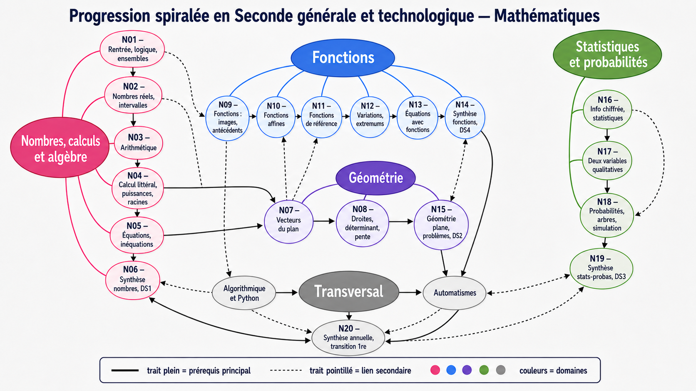

Progression visuelle
La carte ci-dessous montre les notions de Seconde, regroupées par domaine, et les liens entre elles (prérequis en trait plein, liens secondaires en pointillé).
Progression calendaire
Ouvrir la progression calendaire (PDF)
Carte de progression
Cliquez sur une bulle pour ouvrir la page de la notion.

N01 – Rentrée, logique, ensembles N02 – Nombres réels, intervalles N03 – Arithmétique N04 – Calcul littéral, puissances, racines N05 – Équations, inéquations N06 – Synthèse nombres, DS1 N07 – Vecteurs du plan N08 – Droites, déterminant, pente N09 – Fonctions : images, antécédents N10 – Fonctions affines N11 – Fonctions de référence N12 – Variations, extremums N13 – Équations avec fonctions N14 – Synthèse fonctions, DS4 N15 – Géométrie plane, problèmes, DS2 N16 – Info chiffrée, statistiques N17 – Deux variables qualitatives N18 – Probabilités, arbres, simulation N19 – Synthèse stats-probas, DS3 N20 – Synthèse annuelle, transition 1re Automatismes